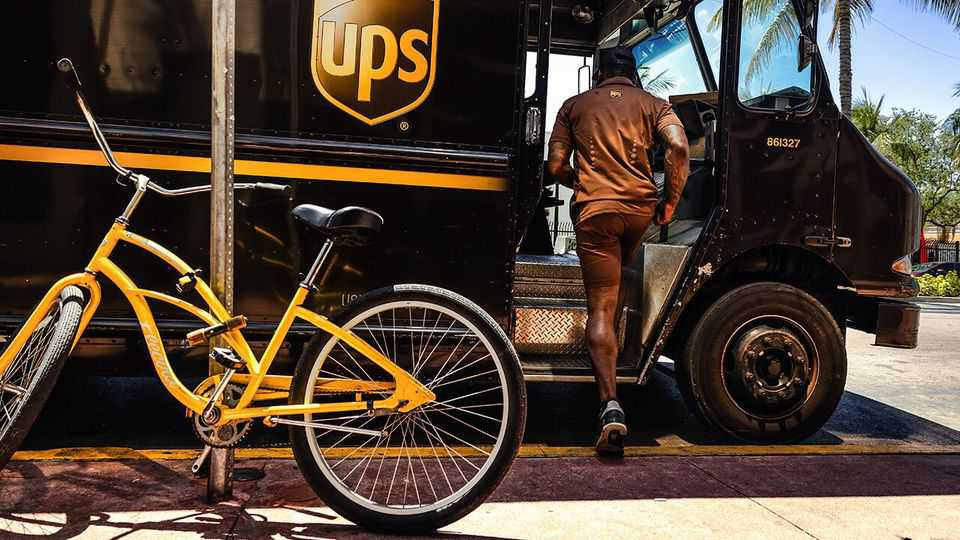
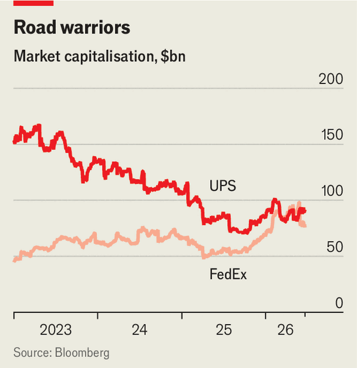

UPS is losing ground to FedEx
The two logistics giants have similar strategies—and face a common threat
June 25th 2026

For America’s biggest delivery companies, the pandemic brought a boom. To fulfil a torrent of orders from people stuck at home in lockdown, FedEx’s white lorries and UPS’s brown ones kept rumbling along America’s highways and their planes criss-crossed its skies.
As demand has cooled, both have taken similar turns, away from low-margin deliveries. In January 2025 UPS said it would halve the business it did with its biggest customer, Amazon, which once brought in 13% of revenue. The tie-up, UPS said, was a drag on profit. FedEx has just spun off FedEx Freight, an underperforming division delivering bulky stuff on pallets, such as car parts. Both are angling for higher-margin, if more exacting, business-to-business work. On June 22nd, for instance, UPS said it would invest nearly $50m in temperature-controlled facilities suitable for transporting medicines.

Investors are so far happier with what FedEx has delivered. In the past year its market capitalisation has risen by 38%, against just 5% for UPS (see chart). As well as unloading FedEx Freight, it has been merging its ground and air networks, which often duplicated each other: separate vehicles would pick up packages for road and air from the same address. FedEx expects this to save $2bn by the end of next year. On June 23rd it reported increases in annual revenue and profit, though its operating margin fell slightly, thanks to higher wages and fuel costs.
UPS too has been slashing costs: last year it closed 93 buildings and cut 48,000 staff, reducing costs by $3.5bn. Another $3bn is due to be lopped off in 2026. This is partly owing to its extrication from Amazon; it says that by the end of this month it will have cut deliveries for the e-commerce giant by half.
Yet further savings will be hard won. UPS is the largest employer of members of America’s Teamsters union. In 2023 it struck a wage deal with the truckers that runs until 2028, with a hefty increase still to come. FedEx’s drivers, by contrast, are not unionised but hired as contractors (though its pilots are union members). By agreement with the Teamsters, UPS can shed drivers only if it buys out a maximum of 7,500 of them for $150,000 each.
Prospects for revenue are questionable too. “It’s really hard not to believe that UPS is going to be facing structural volume declines,” says Brandon Oglenski of Barclays, a bank. As well as retreating from Amazon, UPS faces fierce competition from FedEx in the business-to-business market, where UPS’s volumes fell by 5% year on year in the latest quarter. FedEx, by contrast, has said that its business-to-business activities are performing healthily. Its total revenue has now caught up with that of UPS.
Nor has Amazon gone away. It is a threat to both UPS and Fedex. It already delivers more parcels in America than anyone else. When in early May it declared that it would expand its own logistics business, making deliveries for companies of all sorts, the share prices of FedEx and UPS dipped by 10%. Both have since largely recovered, but the danger lurks.
The recent record may unduly flatter FedEx. Bruce Chan of Stifel Institutional, an investment bank, points out that the merger of its air and road networks, though a big undertaking, was “low-hanging fruit”: UPS has no similar glaring redundancies. UPS promises that the second half of this year will be a turning point: revenue and operating profit will start growing again. But it has a long, hard road ahead. ■
To track the trends shaping commerce, industry and technology, sign up to “The Bottom Line”, our weekly subscriber-only newsletter on global business.